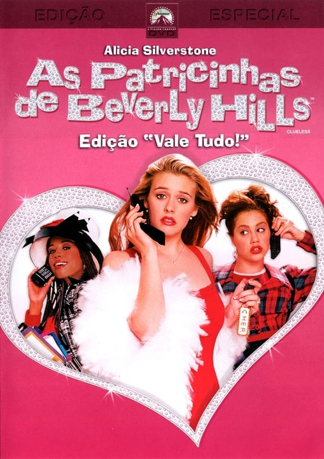
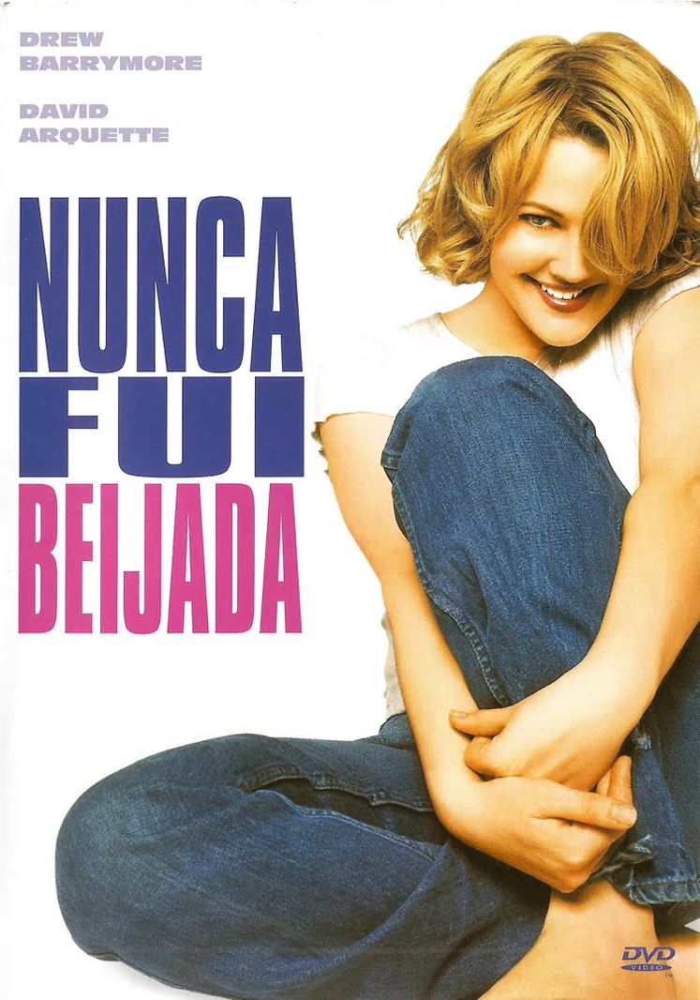
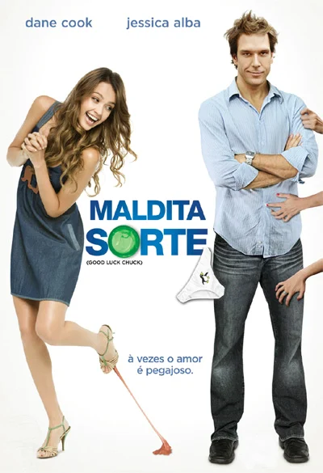
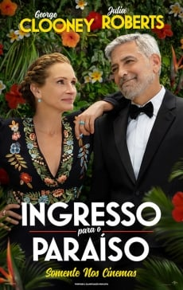
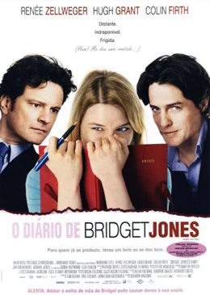
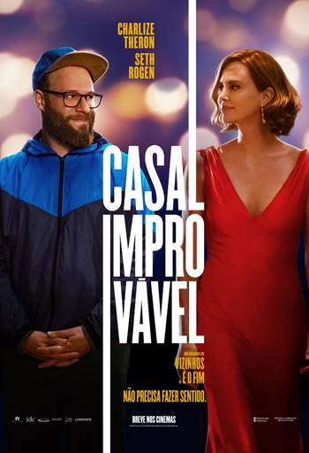
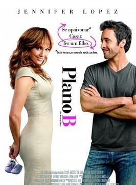

O Par Perfeito (título original: The Perfect Match) é uma comédia romântica de 2016 que acompanha Charlie (interpretado por Terrence J), um agente de talentos que não acredita em relacionamentos de longo prazo.
...
Conhecido por ser um homem charmoso e avesso a compromissos, Charlie é desafiado por seus amigos a manter um relacionamento sério por um mês com uma mulher que ele acabou de conhecer, a misteriosa e independente Eva (interpretada por Cassie Ventura).
Ele aceita o desafio acreditando que nada vai mudar sua visão sobre o amor, mas, à medida que se envolve com Eva, começa a repensar sua abordagem aos relacionamentos. A trama explora como a conexão entre eles vai transformando suas visões sobre o amor e o compromisso.
O filme tem uma narrativa leve, com humor e romance, e aborda temas sobre autodescoberta e os desafios de abrir mão de crenças pessoais para dar lugar a uma nova experiência de vida.
De Repente 30
Sinopse
De Repente 30 (título original: 13 Going on 30) é uma comédia romântica de 2004 que traz a história de Jenna Rink, uma garota de 13 anos que deseja ser adulta para escapar dos dramas e inseguranças da adolescência.
...
Durante sua festa de aniversário, após um desejo intenso de crescer, algo mágico acontece, e Jenna acorda com 30 anos de idade, vivendo a vida que sempre sonhou. Agora adulta (interpretada por Jennifer Garner), ela se depara com um mundo bem diferente do que imaginava, precisando lidar com as responsabilidades, desafios e até com o amor que deixou para trás.
É uma história leve e divertida sobre autodescoberta, que nos lembra de valorizar a inocência e a amizade.
A Proposta
Sinopse
A Proposta (título original: The Proposal) é uma comédia romântica de 2009 que conta a história de Margaret Tate (Sandra Bullock), uma poderosa editora de livros que enfrenta a ameaça de deportação para o Canadá devido a problemas com seu visto de trabalho nos Estados Unidos.
...
Em um ato desesperado para manter seu emprego e sua vida em Nova York, ela convence seu assistente, Andrew Paxton (Ryan Reynolds), a fingir que estão noivos, prometendo benefícios profissionais em troca.
Andrew aceita o plano com a condição de que Margaret o acompanhe até o Alasca, onde sua família mora, para dar mais credibilidade à farsa. Durante a viagem, Margaret começa a ver a vida sob uma nova perspectiva e a conhecer Andrew de verdade, o que leva a situações engraçadas, tensas e inesperadas.
Com humor e romance, o filme explora temas como o valor da família, o autoconhecimento e as reviravoltas que o amor pode trazer, mesmo nas situações mais improváveis.
A Nova Cinderela
Sinopse
A Nova Cinderela (título original: A Cinderella Story) é uma comédia romântica lançada em 2004 que traz uma versão moderna do clássico conto de fadas. O filme segue Sam Montgomery (Hilary Duff ), uma adolescente gentil e trabalhadora que vive sob o controle de sua madrasta cruel e suas meias-irmãs fúteis após a morte de seu pai. Sam trabalha como garçonete na lanchonete do pai enquanto tenta terminar o ensino médio e sonha em ir para a universidade.
...
Na escola, Sam se corresponde anonimamente com um garoto que conhece pela internet e que se revela ser Austin Ames ( Chad Michael Murray), o aluno mais popular e quarterback do time de futebol.
Quando eles decidem se encontrar no baile de Halloween, Sam se vê obrigada a fugir antes da meia-noite, deixando apenas seu celular para trás. A partir daí, Austin começa a procurar pela misteriosa garota, sem saber que é Sam.
A Nova Cinderela combina humor, romance e lições sobre autenticidade e autoconfiança, trazendo uma abordagem atual e divertida do conto clássico sobre se encontrar e acreditar em si mesmo.
Juntos e Misturados
Sinopse
Juntos e Misturados (Blended, 2014): Essa comédia romântica gira em torno de Jim (Adam Sandler) e Lauren (Drew Barrymore ), que se conhecem em um desastroso encontro às cegas.
Após jurarem nunca mais se ver, eles acabam sendo obrigados a dividir uma suíte em um resort na África com seus respectivos filhos.
...
Ao longo das férias forçadas, Jim e Lauren começam a se conhecer melhor, e o ódio inicial vai se transformando em algo mais.
O filme mistura humor, romance e situações familiares engraçadas, abordando os desafios e as surpresas de relacionamentos inesperados.
Como Perder um Homem em 10 Dias
Sinopse
Como Perder um Homem em 10 Dias (How to Lose a Guy in 10 Days, 2003): Nesta divertida comédia romântica, Andie Anderson (Kate Hudson) é uma jornalista que decide escrever um artigo sobre como perder um homem em apenas 10 dias, usando o publicitário Ben Barry (Matthew McConaughey) como cobaia.
...
Só que o que ela não sabe é que Ben fez uma aposta de que conseguirá conquistar uma mulher em 10 dias. Os dois começam a colocar seus planos em ação, mas as situações absurdas acabam gerando uma inesperada conexão entre eles.
A trama explora a dinâmica de relacionamentos e o impacto das expectativas no amor, com uma boa dose de humor e química entre os personagens.
As Patricinhas de Beverly Hills

Sinopse
As Patricinhas de Beverly Hills (Clueless, 1995): Esta comédia clássica dos anos 90 acompanha Cher Horowitz (Alicia Silverstone), uma adolescente rica e popular de Beverly Hills que adora moda e quer ajudar a todos.
...
Quando ela decide transformar a novata Tai (Brittany Murphy) em uma garota popular, acaba passando por uma jornada de autodescoberta e percebendo que nem tudo é tão simples quanto parece.
Cher também começa a refletir sobre as pessoas ao seu redor e suas próprias ações, questionando seus sentimentos e interesses. Inspirado em Emma, de Jane Austen, o filme é uma sátira sobre a vida dos adolescentes ricos e aborda temas como amizade, identidade e crescimento pessoal.
Monte Carlo
Sinopse
Monte Carlo (Monte Carlo, 2011): Nesta comédia romântica, Grace (Selena Gomez) realiza seu sonho de viajar para Paris com sua amiga Emma e sua meia-irmã Meg.
A viagem, que começa de forma desastrosa, muda quando Grace é confundida com uma jovem herdeira britânica, e as três são levadas a Monte Carlo para uma aventura de luxo.
...
Disfarçadas, as amigas passam a viver dias de glamour, com romance e confusões inesperadas, e cada uma começa a descobrir o que realmente importa para sua felicidade.
Casa Comigo?
Sinopse
Casa Comigo? (Leap Year, 2010): O filme acompanha Anna (Amy Adams ), que decide seguir uma tradição irlandesa que permite às mulheres pedirem seus namorados em casamento no dia 29 de fevereiro, durante o ano bissexto.
...
Para isso, ela viaja até Dublin para surpreender seu namorado, mas uma série de imprevistos faz com que ela tenha que cruzar a Irlanda ao lado de Declan (Matthew Goode ), um guia sarcástico.
À medida que enfrentam juntos os desafios da viagem, Anna começa a questionar o que realmente deseja para sua vida e seu coração.
Nunca Fui Beijada

Sinopse
Nunca Fui Beijada (Never Been Kissed, 1999): Josie Geller (Drew Barrymore ) é uma jornalista de 25 anos que nunca teve uma experiência romântica real e, em uma missão de trabalho, se infiltra como estudante em um colégio para investigar o mundo dos adolescentes.
...
Durante essa segunda chance no ensino médio, Josie revive dramas adolescentes, descobre mais sobre si mesma e se surpreende com sentimentos que nunca havia experimentado.
A história é divertida e tocante, trazendo temas sobre autoaceitação e redescoberta do amor.
O Amor Não Tira Férias
Sinopse
O Amor Não Tira Férias (The Holiday, 2006): Nesta comédia romântica, duas mulheres de mundos diferentes – Iris (Kate Winslet) de Londres e Amanda (Cameron Diaz) de Los Angeles – decidem trocar de casa durante as férias para fugir de suas desilusões amorosas.
...
Ao se adaptarem às novas rotinas e conhecerem novas pessoas, incluindo Graham (Jude Law) e Miles (Jack Black), ambas começam a se redescobrir e encontrar possibilidades de amor onde menos esperavam.
O filme explora o poder da amizade, do autoconhecimento e dos começos inesperados, tudo com uma atmosfera calorosa e divertida.
Vestida Para Casar
Sinopse
Vestida para Casar (27 Dresses, 2008): Jane (Katherine Heigl) é a dama de honra perfeita e já esteve em 27 casamentos de amigas, sempre ajudando os outros com um sorriso.
Apesar de ser romântica e sonhar com seu próprio casamento, ela nunca teve a chance de viver essa experiência.
...
Quando sua irmã mais nova fica noiva do homem por quem Jane é secretamente apaixonada, ela precisa lidar com seus sentimentos e repensar sua própria felicidade.
Com uma boa dose de humor e romance, o filme explora as complicações dos relacionamentos e a importância de se priorizar.
Ligeiramente Grávidos
Sinopse
Ligeiramente Grávidos (Knocked Up, 2007): Esta comédia romântica traz a história de Alison (Katherine Heigl), uma jovem ambiciosa que tem uma noite de bebedeira com Ben (Seth Rogen), um cara despretensioso e imaturo.
...
Quando ela descobre que está grávida, ambos precisam lidar com as responsabilidades que vêm com a notícia e tentam encontrar um jeito de fazer a relação funcionar, mesmo sendo tão diferentes.
Com humor e um olhar sobre o inesperado na vida, o filme aborda o crescimento pessoal e a complexidade de se formar uma família.
A Verdade Nua e Crua
Sinopse
A Verdade Nua e Crua (The Ugly Truth, 2009): Abby (Katherine Heigl) é uma produtora de TV que acredita no amor ideal, enquanto Mike (Gerard Butler) é um apresentador que vê os relacionamentos de forma cínica e objetiva.
...
Quando Mike é contratado para salvar o programa de Abby, eles começam a trabalhar juntos, e ele decide ajudá-la a conquistar um homem com seus “truques infalíveis”. No meio das lições e dos conflitos, os dois percebem que podem estar mais próximos do que imaginavam.
A história traz uma combinação de romance e ironia, questionando as expectativas do amor.
Esposa de Mentirinha
Sinopse
Esposa de Mentirinha (Just Go with It, 2011): Danny (Adam Sandler) é um cirurgião plástico que finge estar em um casamento fracassado para conquistar mulheres.
Mas quando ele conhece Palmer (Brooklyn Decker) e deseja algo mais sério, precisa inventar uma esposa de mentira para convencer a namorada.
...
Ele então pede ajuda a sua assistente Katherine (Jennifer Aniston), que finge ser sua esposa em um esquema que se complica e acaba levando todos para uma viagem ao Havaí.
Lá, Danny e Katherine começam a ver que a farsa pode estar mais próxima da realidade do que imaginavam.
Três Vezes Amor
Sinopse
Três Vezes Amor (Definitely, Maybe, 2008): O filme acompanha Will Hayes (Ryan Reynolds), um publicitário em processo de divórcio, que relembra sua história romântica a pedido de sua filha pequena, Maya.
...
Contando sobre três amores passados, ele esconde as identidades reais das mulheres, e Maya tenta adivinhar quem é a mãe dela.
Através de lembranças cheias de momentos engraçados e emocionantes, Will revisita decisões e sentimentos, descobrindo novas perspectivas sobre o amor e a felicidade.
Guerra é Guerra!
Sinopse
Guerra é Guerra (This Means War, 2012): Dois agentes da CIA, FDR (Chris Pine) e Tuck (Tom Hardy), descobrem que estão saindo com a mesma mulher, Lauren (Reese Witherspoon), e entram em uma competição cheia de espionagem e artimanhas para conquistá-la.
...
Enquanto os dois usam todos os recursos e habilidades para ganhar o coração de Lauren, ela precisa decidir entre dois tipos de relacionamento e aprender sobre o que realmente quer.
O filme mistura ação, romance e comédia de uma forma leve e envolvente.
Qual Seu Número?
Sinopse
Qual Seu Número? (What's Your Number?, 2011): Ally (Anna Faris) é uma jovem que descobre, por uma pesquisa, que pode ter desperdiçado o amor da sua vida entre seus ex-namorados.
...
Determinada a não aumentar seu "número", ela decide revisitar antigos relacionamentos para ver se algum deles era, na verdade, o parceiro ideal.
Com a ajuda de seu vizinho charmoso, Colin (Chris Evans), ela se lança em uma aventura cheia de encontros desastrosos, humor e surpresas.
A Casa das Coelhinhas
Sinopse
A Casa das Coelhinhas (The House Bunny, 2008): Shelley (Anna Faris) é uma coelhinha da Playboy que, após ser expulsa da mansão, fica sem rumo até encontrar abrigo na Zeta Alpha Zeta, uma fraternidade universitária desajeitada e prestes a perder sua casa no campus.
...
Shelley ensina as garotas a se tornarem populares e confiantes, enquanto elas a ajudam a encontrar um propósito maior para sua vida.
Com muito humor, o filme fala sobre autoaceitação, amizade e encontrar o próprio valor.
Garota Mimada
Sinopse
Garota Mimada (Wild Child, 2008): Poppy Moore (Emma Roberts) é uma adolescente mimada de Malibu que, após uma série de travessuras, é enviada pelo pai a um rigoroso internato britânico.
...
No começo, ela tenta de tudo para ser expulsa, mas, ao fazer amizades e descobrir quem realmente é, Poppy começa a mudar sua visão sobre o que significa crescer e aprender com os outros.
A história explora amizade, amadurecimento e encontrar um equilíbrio entre liberdade e responsabilidade.
Maldita Sorte

Sinopse
Maldita Sorte (Good Luck Chuck, 2007): Charlie Logan (Dane Cook) é um dentista que, após uma maldição, descobre que qualquer mulher com quem ele se envolve encontra o amor verdadeiro com o próximo homem que conhece.
...
Quando ele se apaixona por Cam (Jessica Alba), uma mulher divertida e desajeitada, Charlie tenta quebrar o ciclo e conquistar seu coração sem perder o dela para outro.
O filme mistura comédia e romance, explorando temas como azar no amor e o poder das coincidências.
Tudo Que Uma Garota Quer
Sinopse
Tudo Que Uma Garota Quer (What a Girl Wants, 2003): Daphne (Amanda Bynes) é uma jovem americana que decide viajar para a Inglaterra para conhecer seu pai, Henry Dashwood (Colin Firth), um aristocrata britânico.
...
Apesar das diferenças culturais, Daphne tenta se encaixar na vida sofisticada da família e ao mesmo tempo permanecer fiel a si mesma.
O filme explora questões de identidade, pertencimento e o poder do amor familiar.
Quero Ficar Com Polly
Sinopse
Quero Ficar com Polly (Along Came Polly, 2004): Após ser abandonado pela esposa na lua de mel, Reuben (Ben Stiller), um homem cauteloso e metódico, reencontra Polly (Jennifer Aniston), uma amiga de infância impulsiva e cheia de vida.
...
Apesar de serem opostos em quase tudo, Reuben se vê cada vez mais atraído pelo jeito despreocupado de Polly e começa a repensar suas próprias atitudes.
O filme explora a ideia de equilíbrio e o desafio de sair da zona de conforto para viver plenamente.
Como se Fosse a Primeira Vez
Sinopse
Como Se Fosse a Primeira Vez (50 First Dates, 2004): Henry (Adam Sandler) é um veterinário que se apaixona por Lucy (Drew Barrymore), uma mulher que sofre de perda de memória de curto prazo e esquece tudo a cada novo dia.
...
Determinado a conquistá-la, Henry se propõe a fazer Lucy se apaixonar por ele diariamente.
Com humor e romance, o filme fala sobre o poder da perseverança e a profundidade do amor verdadeiro.
Um Lugar Chamado Notting Hill
Sinopse
Um Lugar Chamado Notting Hill (Notting Hill, 1999): William Thacker (Hugh Grant) é um pacato dono de livraria no bairro de Notting Hill, em Londres, que vê sua vida mudar ao conhecer a famosa atriz Anna Scott (Julia Roberts).
...
Os dois se apaixonam, mas precisam lidar com as diferenças entre seus mundos e com a pressão da fama.
Esta comédia romântica explora as complexidades do amor e as dificuldades de manter um relacionamento diante de realidades tão opostas.
Noiva em Fuga
Sinopse
Noiva em Fuga (Runaway Bride, 1999): Maggie Carpenter (Julia Roberts) é uma mulher conhecida por fugir de seus próprios casamentos, deixando os noivos no altar. O jornalista Ike Graham (Richard Gere) decide escrever uma matéria sobre ela, mas, ao conhecê-la de perto, começa a perceber que há mais em sua história do que ele imaginava.
...
Enquanto Maggie tenta entender seus medos e inseguranças, Ike vê sua opinião mudar, e o amor começa a surgir entre eles.
A história aborda o medo de compromisso e a importância de se autoconhecer antes de entrar em um relacionamento.
Ingresso Para o Paraíso

Sinopse
Ingresso para o Paraíso (Ticket to Paradise, 2022): Nesta comédia romântica, os ex-cônjuges David (George Clooney) e Georgia (Julia Roberts) se reencontram em uma viagem para Bali, onde tentam impedir que a filha deles, Lily, cometa o mesmo "erro" que eles cometeram ao se casar jovem e impulsivamente.
...
Durante a missão para sabotar o casamento, David e Georgia acabam redescobrindo o que sentem um pelo outro.
O filme explora a dinâmica de família, as segundas chances e a capacidade de amar novamente.
Comer, Rezar, Amar
Sinopse
Comer, Rezar, Amar (Eat Pray Love, 2010): Baseado em uma história real, o filme acompanha Liz Gilbert (Julia Roberts), que após um divórcio traumático, decide embarcar em uma jornada de autoconhecimento e cura.
...
Ela passa por três destinos: Itália (onde redescobre o prazer), Índia (onde explora a espiritualidade) e Bali (onde busca equilíbrio e, talvez, um novo amor).
O filme aborda temas como identidade, autodescoberta e a importância de se reconectar com o que realmente importa.
Enquanto Você Dormia
Sinopse
Enquanto Você Dormia (While You Were Sleeping, 1995): Lucy (Sandra Bullock), uma solitária funcionária de metrô, salva Peter, um homem que admira de longe, após ele sofrer um acidente.
...
Quando ele fica em coma, a família dele a confunde com sua noiva, e Lucy, sem coragem para contar a verdade, acaba sendo acolhida por eles. Conforme o tempo passa, ela começa a se apaixonar pelo irmão de Peter, Jack.
O filme traz uma mistura de comédia e romance, destacando o poder das conexões inesperadas.
Amor à Segunda Vista
Sinopse
Amor à Segunda Vista (Two Weeks Notice, 2002): A advogada idealista Lucy (Sandra Bullock) trabalha para o milionário excêntrico George Wade (Hugh Grant), mas, cansada das demandas dele, decide pedir demissão.
...
Enquanto Lucy tenta se afastar, George percebe o quanto depende dela, e ambos começam a ver que talvez tenham sentimentos um pelo outro.
A história explora as transformações que o amor e a convivência podem trazer, com boas doses de humor.
Todos Menos Você
Sinopse
Todos Menos Você (Someone Great, 2019): Jenny (Gina Rodriguez) é uma jornalista musical que, após um rompimento, decide embarcar em uma última aventura com suas melhores amigas antes de mudar de cidade.
...
Com uma narrativa leve e divertida, o filme fala sobre crescimento, amizade e sobre como um término pode ser o começo de uma nova fase.
Amor a Toda Prova
Sinopse
Amor a Toda Prova (Crazy, Stupid, Love., 2011): Cal (Steve Carell) vê sua vida virar de cabeça para baixo após descobrir que sua esposa quer o divórcio.
...
Para ajudá-lo a retomar a vida amorosa, ele encontra Jacob (Ryan Gosling), um mulherengo charmoso que lhe ensina técnicas de conquista. Durante essa transformação, Cal e Jacob enfrentam suas próprias surpresas e desafios no amor.
A história explora as complexidades e surpresas dos relacionamentos.
O Diário de Bridget Jones

Sinopse
O Diário de Bridget Jones (Bridget Jones’s Diary, 2001): Bridget (Renée Zellweger), uma mulher insegura e desastrada, decide dar uma virada em sua vida e começa a escrever um diário sobre suas tentativas de emagrecer, parar de beber e, principalmente, encontrar o amor.
...
A narrativa se complica quando ela se vê dividida entre o charmoso chefe Daniel Cleaver (Hugh Grant) e o reservado Mark Darcy (Colin Firth).
É uma comédia romântica clássica sobre autoestima e os altos e baixos de se apaixonar.
(500) Dias com Ela
Sinopse
(500) Dias com Ela ((500) Days of Summer, 2009): Tom (Joseph Gordon-Levitt) acredita no amor verdadeiro e se apaixona perdidamente por Summer (Zooey Deschanel), uma mulher que não quer um relacionamento sério.
...
O filme narra os altos e baixos de seu romance de 500 dias, em uma narrativa não linear que questiona expectativas e realidades do amor.
É uma história sincera e comovente sobre como os relacionamentos moldam nossas percepções.
Casal Improvável

Sinopse
Casal Improvável (Long Shot, 2019): Charlotte (Charlize Theron) é uma influente política que decide concorrer à presidência e contrata Fred (Seth Rogen), um jornalista desajustado e antigo amigo, como redator de discursos.
...
Apesar das diferenças de estilo e de vida, eles se reaproximam e acabam se envolvendo romanticamente.
A comédia explora as diferenças sociais e o impacto do amor em nossas vidas, mostrando como duas pessoas diferentes podem se complementar.
A Mentira
Sinopse
A Mentira (Easy A, 2010): Olive (Emma Stone) é uma estudante discreta que vê sua vida mudar quando começa um rumor falso sobre sua vida amorosa.
...
Inspirada pela obra A Letra Escarlate, ela decide “assumir” a má reputação para ver onde isso a leva, mas a situação sai do controle.
Com humor inteligente, o filme aborda temas como reputação, autoestima e a pressão dos rumores no ambiente escolar.
S.O.S do Amor
Sinopse
S.O.S do Amor (The Last Song, 2010): Ronnie (Miley Cyrus) é uma adolescente rebelde que, após o divórcio dos pais, é obrigada a passar o verão com o pai em uma pequena cidade.
...
Durante o verão, ela reencontra o amor e o perdão e descobre a importância das relações familiares e do amadurecimento pessoal.
Baseado em um livro de Nicholas Sparks, o filme é uma mistura de romance e drama familiar.
Encontro de Casais
Sinopse
Encontro de Casais (Couples Retreat, 2009): Quatro casais decidem fazer uma viagem juntos a um resort paradisíaco, mas o que parecia ser férias relaxantes se transforma em uma série de exercícios e atividades para melhorar o relacionamento, obrigando cada casal a confrontar questões que preferiam evitar.
...
O filme mistura comédia e romance, explorando as dificuldades e redescobertas do amor no casamento.
Ela e os Caras
Sinopse
Ela e os Caras (Sydney White, 2007): Sydney (Amanda Bynes) é uma jovem universitária que, após ser rejeitada por uma fraternidade elitista, se junta a um grupo de rapazes considerados “desajustados”.
...
Inspirada pelo conto de Branca de Neve, Sydney e seus novos amigos se unem para enfrentar as adversidades no campus.
Com humor e lições de amizade, o filme explora o poder de aceitar a si mesmo e de se encontrar.
Amizade Colorida
Sinopse
Amizade Colorida (Friends with Benefits, 2011): Jamie (Mila Kunis) e Dylan (Justin Timberlake) são amigos que decidem se envolver sem compromisso, acreditando que podem manter a amizade acima de qualquer envolvimento emocional.
...
Mas, à medida que o tempo passa, ambos começam a perceber que há algo mais entre eles.
A história explora a linha tênue entre amizade e amor e a dificuldade de separar sentimentos e conexão.
O Amor é Cego
Sinopse
O Amor é Cego (Shallow Hal, 2001): Hal (Jack Black) é um homem superficial que só se interessa pela aparência física das mulheres.
...
Depois de ser hipnotizado, ele começa a ver a beleza interior das pessoas, fazendo com que se apaixone por Rosemary (Gwyneth Paltrow), que ele enxerga como incrivelmente atraente.
A comédia explora temas sobre beleza, superficialidade e amor verdadeiro.
Amor com Data Marcada
Sinopse
Amor com Data Marcada (Holidate, 2020): Sloane (Emma Roberts) e Jackson (Luke Bracey) são dois estranhos cansados de passar as festas de final de ano sozinhos ou enfrentando as cobranças da família.
...
Decidem então ser "amigos de festa" durante as ocasiões especiais. No entanto, a parceria acaba se tornando algo mais, e ambos começam a questionar seus sentimentos.
O filme mistura romance e comédia para abordar as pressões familiares e os caminhos inesperados do amor.
A Sogra
Sinopse
A Sogra (Monster-in-Law, 2005): Charlotte (Jennifer Lopez) encontra o homem dos seus sonhos, mas descobre que a mãe dele, Viola (Jane Fonda), é uma sogra controladora e disposta a tudo para acabar com o relacionamento.
...
As duas entram em uma divertida guerra de egos, enquanto Charlotte tenta mostrar que o amor pode superar as tentativas de sabotagem de Viola.
A comédia foca nos desafios das relações familiares e na superação de obstáculos pelo amor.
Juntos pelo Acaso
Sinopse
Juntos pelo Acaso (Life as We Know It, 2010): Holly (Katherine Heigl) e Eric (Josh Duhamel) são forçados a viver juntos e cuidar da afilhada Sophie após a morte de seus melhores amigos.
...
Mesmo sendo completamente diferentes, eles precisam aprender a se entender e a colocar a criança em primeiro lugar.
Com romance e situações comoventes, o filme explora temas sobre responsabilidade, luto e novas oportunidades de amor.
Coincidências do Amor
Sinopse
Coincidências do Amor (The Switch, 2010): Kassie (Jennifer Aniston) decide ter um filho por inseminação artificial e conta com seu amigo Wally (Jason Bateman) para apoiá-la. No entanto, ele troca acidentalmente o doador pelo próprio material, sem que Kassie saiba.
...
Anos depois, ele reencontra Kassie e começa a suspeitar da verdade.
Com humor e leveza, o filme aborda os laços inesperados e as coincidências que o destino coloca no caminho.
Plano B

Sinopse
Plano B (The Back-Up Plan, 2010): Zoe (Jennifer Lopez) está cansada de esperar o parceiro ideal e decide realizar o sonho de ser mãe sozinha, por inseminação artificial. No entanto, logo após o procedimento, ela conhece Stan (Alex O'Loughlin), um homem por quem se interessa, e ambos tentam lidar com o desafio de construir um relacionamento enquanto se preparam para a chegada dos gêmeos.
...
A comédia romântica fala sobre amor, família e os imprevistos que a vida pode trazer.